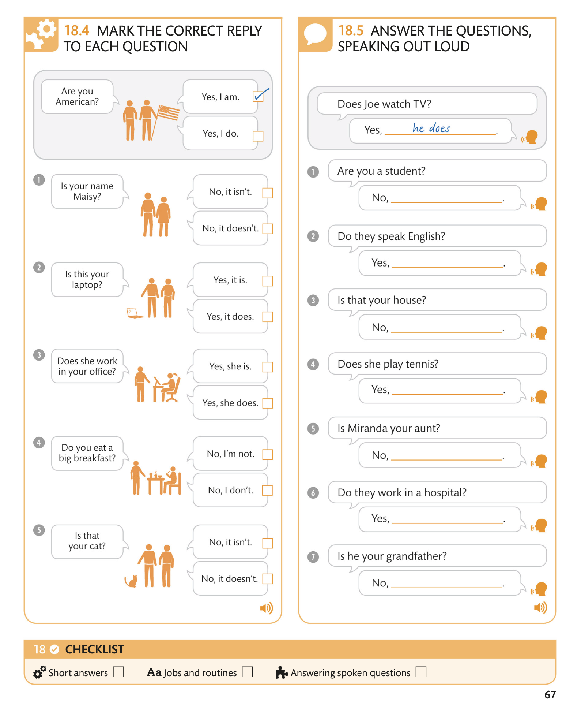

Answering questions / Отвечая на вопросы
When answering questions in English, you can often leave out words to shorten your response. These short answers are often used in spoken English.
Отвечая на вопросы на английском языке, вы часто можете опускать слова, чтобы сократить ответ. Эти короткие ответы часто используются в разговорном английском языке.
18.1 KEY LANGUAGE QUESTIONS WITH “TO BE”
When the question uses the verb “to be,” use “to be” in the short answer. If the question uses “do” or “does,” so does the short answer.
Если в вопросе используется глагол «to be», используйте «to be» в кратком ответе. Если в вопросе используется слово «do» или «does», то же самое относится и к короткому ответу.
18.2 FURTHER EXAMPLES SHORT ANSWERS
18.3 LISTEN TO THE AUDIO AND ANSWER THE QUESTIONS
